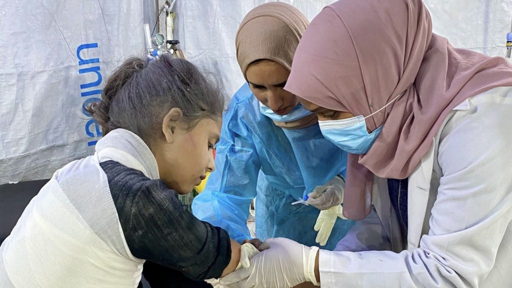

A women's crisis--
Women are disproportionately affected by the water crisis, as they are often responsible for collecting water. This takes time away from work, school and caring for family. The lack of water and sanitation locks women in a cycle of poverty.
Empowering women is critical to solving the water crisis. When women have access to safe water at home, they can pursue more beyond water collection and their traditional roles. They have time to work and add to their household income.

A health crisis--
The water crisis is a health crisis. More than 1 million people die each year from water, sanitation and hygiene-related diseases which could be reduced with access to safe water or sanitation. Every 2 minutes a child dies from a water-related disease. Access to safe water and sanitation contributes to improved health and helps prevent the spread of infectious disease. It means reduced child and maternal mortality rates. It means reduced physical injury from constant lifting and carrying heavy loads of water. Now more than ever, access to safe water is critical to the health of families around the world.
A children's and education crisis--
Children are often responsible for collecting water for their families. This takes time away from school and play. Access to safe water and sanitation changes this. Reductions in time spent collecting water have been found to increase school attendance, especially for girls. Access to safe water gives children time to play and opportunity for a bright future.